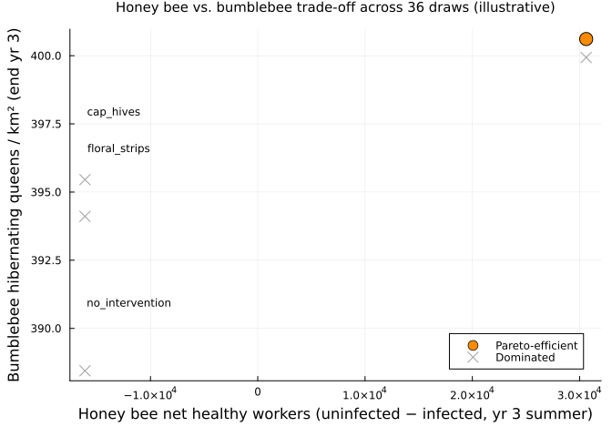
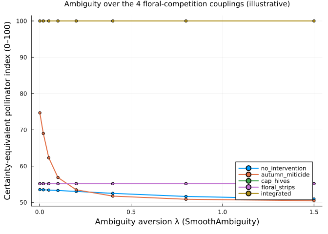

Managing Varroa, virus spillover and floral competition between honey bees and bumblebees
Simon Frost
- The question
- Management actions and parametric uncertainty
- Disease utility (
InfectionUtility), multi-attribute utility and the Pareto front - Which biological uncertainty matters most (
evppi)? - Pre-treatment mite-wash surveillance across apiaries (
survey_or_act) - Structural ambiguity across the four floral-competition couplings
- What is measured and what is assumed
- References
ENV["GKSwstype"] = "100"
using MatrixCommunityModels
using DecisionAnalysis
using Printf, Random, Statistics
using PlotsThe question
In vignettes 10 to 13, a honey bee colony (Apis mellifera), Varroa destructor mites, deformed wing virus (DWV) and a wild bumblebee population (Bombus terrestris) were composed through two pools: shared floral nectar and pollen, and infectious virus left on flowers. That work left two kinds of uncertainty open for a landscape manager:
- Parametric uncertainty over winter mite burden, miticide efficacy under resistance, virus deposition rate on flowers, and whether DWV elevates bumblebee worker mortality (
infected_hazardinBUMBLEBEE_PARAMETERS, where empirical evidence conflicts); - Deep structural uncertainty over how honey bees and bumblebees share flowers — vignette 13 showed that the four couplings of
floral_competition(:scramble,:standing_crop,:partitioned,:preemptive) predict sharply different bumblebee outcomes from the exact same two species models.
Here we turn that composed pollinator community into a multi-objective decision analysis in DecisionAnalysis.jl. Should a landscape manager apply autumn miticide, cap apiary density, sow wildflower margins, or combine interventions? How does the ranking change when infected honey bees are penalised (InfectionUtility) or weighted alongside wild bumblebee queens (AdditiveUtility and ParetoFront)? Which uncertain biological parameter is worth the most to measure (evppi)? When should beekeepers run a mite-wash survey before treating (survey_or_act)? And how does structural ambiguity across the four floral-competition models affect the optimal choice under GammaMaximin, EAdmissible and SmoothAmbiguity?
What is published and what is illustrative. The species life cycles and default parameters (honeybee, varroa, bumblebee, floral_competition, flower_transmission) come from HoPoMo (Schmickl & Crailsheim 2007), BEEHAVE (Becher et al. 2014), Bumble-BEEHAVE (Becher et al. 2018), Martin (1998) and the floral supply measurements of Hicks et al. (2016) and Baude et al. (2016), as documented in vignettes 10–13. The five landscape actions, the parametric prior draws, the effort ratios for mite-wash surveillance, and the pollinator utility weights are illustrative. No monetary prices appear anywhere: outcomes are measured in uninfected and infected honey bee workers, hibernating bumblebee queens per km², and inspection-effort units.
Management actions and parametric uncertainty
We simulate a 3-year daily trajectory (1,095 days) of the coupled honeybee + varroa + bumblebee community with DWV transmission enabled (virus = true), starting on 1 January from 10,000 honey bee workers, 25 kg honey, 100 hibernating bumblebee queens per km² and an initial winter mite burden mites0 (15% viral). Five candidate management actions are compared against :no_intervention (the explicit baseline: 4 hives/km², untreated, farmland baseline forage of 3 kg sugar and 3 kg pollen per km² per day):
:no_intervention— 4 hives/km², no miticide, baseline farmland forage (baseline);:autumn_miticide— 4 hives/km², 40-day autumn miticide (days 270..309, daily phoretic mite mortalitymiticide_eff);:cap_hives— cap apiary density to 1.5 hives/km², no miticide, baseline forage;:floral_strips— 4 hives/km², no miticide, wildflower margins doubling nectar and pollen supply (6 kg/km²/day) and flower count (10⁷/km²) and extending forage to day 300;:integrated— 2.0 hives/km² + autumn miticide (miticide_eff) + wildflower margins (5 kg/km²/day,8 × 10⁶flowers/km², season ending day 295).
const YEARS = 3
const DAYS = 365 * YEARS
const SUMMER_Y3 = (365 * 2 + 170):(365 * 2 + 230)
action_names = [:no_intervention, :autumn_miticide, :cap_hives, :floral_strips, :integrated]
function run_pollinator(action::Symbol, θ; mode::Symbol = :scramble, refuge::Real = 0.05)
hives, treated, peak_supply, flower_count, finish_day = if action === :no_intervention
(4.0, false, 3000.0, 5.0e6, 280)
elseif action === :autumn_miticide
(4.0, true, 3000.0, 5.0e6, 280)
elseif action === :cap_hives
(1.5, false, 3000.0, 5.0e6, 280)
elseif action === :floral_strips
(4.0, false, 6000.0, 1.0e7, 300)
else # :integrated
(2.0, true, 5000.0, 8.0e6, 295)
end
sup = floral_supply(peak_supply; finish = finish_day)
forage = floral_competition(mode; nectar = sup, pollen = sup, hives = hives,
refuge = refuge)
flowers = flower_transmission(; flowers = floral_supply(flower_count; finish = finish_day),
hives = hives, deposit = 0.02 * θ.deposit_scale)
tr = treated ? (day -> 270 <= day < 310 ? θ.miticide_eff : 0.0) : (day -> 0.0)
bb_par = merge(BUMBLEBEE_PARAMETERS, (infected_hazard = θ.infected_hazard,))
c = community(honeybee(; virus = true, forage = forage, flowers = flowers),
varroa(; virus = true, treatment = tr),
bumblebee(; virus = true, parameters = bb_par, forage = forage,
flowers = flowers),
forage.species...)
n0 = honeybee_state(c; mites = θ.mites0, viral = 0.15, queens = 100)
sol = project(c, n0, 1:DAYS)
hb_healthy = mean(stage_total(sol, :honeybee, [:hive_healthy, :forager_healthy])[SUMMER_Y3])
hb_infected = mean(stage_total(sol, :honeybee,
[:hive_infected, :forager_infected,
:hive_carrier, :forager_carrier])[SUMMER_Y3])
bb_queens = stage_total(sol, :bumblebee, :hibernating)[end]
bb_inf_peak = maximum(stage_total(sol, :bumblebee, :infected_worker)[(365 * 2 + 1):end])
return (; hb_healthy, hb_infected, bb_queens, bb_inf_peak)
endrun_pollinator (generic function with 1 method)Four uncertain parameters are drawn across N = 36 parameter sets under the default :scramble competition model (all illustrative):
mites0: initial winter phoretic mite load per colony, uniform in[150, 450];deposit_scale: virus spillover intensity multiplier on flowers, log-normal around 1 (roughly0.4to2.5);infected_hazard: ratio of mortality of DWV-infected to healthy bumblebee workers, uniform in[1.0, 2.2];miticide_eff: daily phoretic mite mortality under autumn treatment, uniform in[0.06, 0.14].
rng = Xoshiro(33)
N = 36
draws = (;
mites0 = 150.0 .+ 300.0 .* rand(rng, N),
deposit_scale = exp.(0.45 .* randn(rng, N)),
infected_hazard = 1.0 .+ 1.2 .* rand(rng, N),
miticide_eff = 0.06 .+ 0.08 .* rand(rng, N),
)
na = length(action_names)
hb_healthy_Q = zeros(na, N)
hb_infected_Q = zeros(na, N)
bb_queens_Q = zeros(na, N)
bb_inf_Q = zeros(na, N)
for d in 1:N
θ = (mites0 = draws.mites0[d], deposit_scale = draws.deposit_scale[d],
infected_hazard = draws.infected_hazard[d], miticide_eff = draws.miticide_eff[d])
for (ai, act) in enumerate(action_names)
sc = run_pollinator(act, θ; mode = :scramble)
hb_healthy_Q[ai, d] = sc.hb_healthy
hb_infected_Q[ai, d] = sc.hb_infected
bb_queens_Q[ai, d] = sc.bb_queens
bb_inf_Q[ai, d] = sc.bb_inf_peak
end
end
# Assemble an OutcomeTable directly from the 36 × 5 live model runs.
runs = [(; draw = d, action = act, replicate = 1,
hb_healthy = hb_healthy_Q[ai, d], hb_infected = hb_infected_Q[ai, d],
bb_queens = bb_queens_Q[ai, d], bb_inf_peak = bb_inf_Q[ai, d])
for d in 1:N for (ai, act) in enumerate(action_names)]
param_tbl = [(; draw = d, mites0 = draws.mites0[d], deposit_scale = draws.deposit_scale[d],
infected_hazard = draws.infected_hazard[d], miticide_eff = draws.miticide_eff[d])
for d in 1:N]
ot = OutcomeTable(runs; outcomes = [:hb_healthy, :hb_infected, :bb_queens, :bb_inf_peak],
parameters = param_tbl, actions = action_names)
belief = SampleBelief(ot)
@printf("%-18s %11s %11s %11s %11s\n",
"action", "HB healthy", "HB virus", "BB queens", "BB inf peak")
for (ai, act) in enumerate(action_names)
@printf("%-18s %11.0f %11.0f %11.1f %11.1f\n",
act, mean(hb_healthy_Q[ai, :]), mean(hb_infected_Q[ai, :]),
mean(bb_queens_Q[ai, :]), mean(bb_inf_Q[ai, :]))
endaction HB healthy HB virus BB queens BB inf peak
no_intervention 2045 18150 388.4 101.6
autumn_miticide 31984 1373 399.9 3.6
cap_hives 2046 18151 395.5 49.7
floral_strips 2046 18151 394.1 62.4
integrated 31988 1374 400.6 1.2Disease utility (InfectionUtility), multi-attribute utility and the Pareto front
Following the infectious-disease convention of DecisionAnalysis.jl, we evaluate the honey bee colony with InfectionUtility(; uninfected = :hb_healthy, infected = :hb_infected, weight = w) — counting uninfected adults minus w times infected/carrier adults — at w = 0, w = 1 and w = 3. Then we combine uninfected honey bees and wild bumblebee queens via AdditiveUtility (normalising each taxon cleanly onto [0, 1] without inventing prices) and check the ParetoFront across both bee guilds:
for w in (0.0, 1.0, 3.0)
pt = payoff_table(ot, InfectionUtility(; uninfected = :hb_healthy, infected = :hb_infected, weight = w))
pr = DecisionProblem(pt, belief; baseline = :no_intervention)
res = decide(pr, MaxExpectedUtility())
@printf("InfectionUtility (w = %.1f): best = %-18s (expected utility = %8.0f workers)\n",
w, res.chosen[1], maximum(Float64.(aggregate(Expectation(), pr))))
endInfectionUtility (w = 0.0): best = integrated (expected utility = 31988 workers)
InfectionUtility (w = 1.0): best = integrated (expected utility = 30614 workers)
InfectionUtility (w = 3.0): best = integrated (expected utility = 27865 workers)u_pollinators = AdditiveUtility(
[LinearUtility(:hb_healthy; worst = 0.0, best = 20_000.0),
LinearUtility(:bb_queens; worst = 0.0, best = 200.0)];
weights = [0.5, 0.5],
)
payoff_poll = payoff_table(ot, u_pollinators)
prob_poll = DecisionProblem(payoff_poll, belief; baseline = :no_intervention)
payoff_hb = payoff_table(ot, InfectionUtility(; uninfected = :hb_healthy, infected = :hb_infected, weight = 1.0))
payoff_bb = payoff_table(ot, IndividualsUtility(:bb_queens))
pf = decide((; honeybees = payoff_hb, bumblebees = payoff_bb), belief, ParetoFront())
@printf("Additive pollinator index best: %s | Pareto front: %s\n",
decide(prob_poll, MaxExpectedUtility()).chosen[1],
join(string.(pf.chosen), ", "))Additive pollinator index best: integrated | Pareto front: integratedmh = [mean(Float64.(payoff_hb.Q[ai, :])) for ai in 1:na]
mb = [mean(bb_queens_Q[ai, :]) for ai in 1:na]
is_pf = [a in pf.chosen for a in action_names]
plt_pf = scatter(mh[is_pf], mb[is_pf]; markersize = 8, color = :darkorange,
label = "Pareto-efficient",
xlabel = "Honey bee net healthy workers (uninfected − infected, yr 3 summer)",
ylabel = "Bumblebee hibernating queens / km² (end yr 3)",
title = "Honey bee vs. bumblebee trade-off across 36 draws (illustrative)",
titlefontsize = 10, legend = :bottomright)
scatter!(plt_pf, mh[.!is_pf], mb[.!is_pf]; markersize = 6, color = :gray60,
marker = :xcross, label = "Dominated")
for (x, y, a) in zip(mh, mb, action_names)
annotate!(plt_pf, x + 250, y + 2.5, text(String(a), 8, :left))
end
plt_pf
Miticide alone rescues the honey bee colony and clears DWV from flowers, yet leaves four hives per km² drawing down farmland nectar and pollen; capping hives or sowing wildflower strips relieves floral competition for bumblebees, while :integrated balances both guilds simultaneously.
Which biological uncertainty matters most (evppi)?
When the full :integrated package is feasible, it beats every single-intervention option across all 36 draws, so evpi(prob_poll) is zero — no biological measurement is needed to recommend combining hive management, miticide and wildflower strips. When miticide is unavailable (for example, around treatment-free apiaries, restricting feasible actions to [:no_intervention, :cap_hives, :floral_strips]), managers must choose between capping hive density and planting wildflower strips to protect wild bumblebees. Using both SplineRegression() and GaussianProcessRegression(), we quantify EVPI and single-parameter EVPPI on the treatment-free bumblebee conservation objective (bb_queens):
evpi_poll = evpi(prob_poll, SampleAverage())
@printf("Unrestricted pollinator index EVPI = %.4f ± %.4f (zero because :integrated dominates)\n\n",
Float64(evpi_poll.value), evpi_poll.standard_error)
prob_bb_organic = DecisionProblem(payoff_bb, belief;
feasible = [:no_intervention, :cap_hives, :floral_strips],
baseline = :no_intervention)
evpi_bb = evpi(prob_bb_organic, SampleAverage())
@printf("%-20s %16s %16s\n", "parameter (BB queens)", "Spline EVPPI", "GP EVPPI")
for par in (:mites0, :deposit_scale, :infected_hazard)
e1 = evppi(prob_bb_organic, par, SplineRegression())
e2 = evppi(prob_bb_organic, par, GaussianProcessRegression())
@printf("%-20s %7.3f ± %-6.3f %7.3f ± %-6.3f\n",
par, Float64(e1.value), e1.standard_error,
Float64(e2.value), e2.standard_error)
end
@printf("%-20s %7.3f ± %-6.3f\n", "all (EVPI)", Float64(evpi_bb.value), evpi_bb.standard_error)Unrestricted pollinator index EVPI = -0.0000 ± 0.0000 (zero because :integrated dominates)
parameter (BB queens) Spline EVPPI GP EVPPI
mites0 0.000 ± 0.000 -0.000 ± 0.000
deposit_scale 0.000 ± 0.000 0.000 ± 0.000
infected_hazard 0.006 ± 0.003 0.000 ± 0.003
all (EVPI) 0.003 ± 0.003Pre-treatment mite-wash surveillance across apiaries (survey_or_act)
Before applying autumn miticide across a network of six apiary sites, a beekeeper can either treat immediately (costing 6 apiary effort-hours per site) or run an alcohol-wash mite count first (costing 1 effort-hour, with sensitivity d_i and zero false positives above the treatment threshold) and treat only sites testing high-mite. Because effort is measured in beekeeper hours (no monetary valuation), survey_or_act compares value (expected colony workers saved per effort-hour) directly and select_under_budget(; method = :exact) allocates a seasonal budget of 20 effort-hours across the six apiaries:
# Illustrative 6-apiary network: (name, prior_high_mite, sensitivity, workers_saved_if_high)
apiaries = [
(:meadow_north, 0.15, 0.85, 8_500.0),
(:orchard_east, 0.30, 0.85, 9_500.0),
(:hedgerow_west, 0.55, 0.80, 10_000.0),
(:arable_south, 0.75, 0.85, 9_000.0),
(:heath_ridge, 0.25, 0.90, 11_000.0),
(:valley_farm, 0.90, 0.80, 10_500.0),
]
units = map(apiaries) do (nm, p_hi, sens, gain)
Q = PayoffTable([:no_treatment, :treat], [:low_mite, :high_mite],
[16_000.0 16_000.0 - gain;
16_000.0 16_000.0])
pr = DecisionProblem(Q, [1.0 - p_hi, p_hi]; baseline = :no_treatment)
ex = Experiment([1.0 1.0 - sens;
0.0 sens]; signals = [:below_thresh, :above_thresh],
states = [:low_mite, :high_mite])
survey_or_act(pr, ex; action_costs = [:no_treatment => 0.0, :treat => 6.0],
survey_cost = 1.0)
end
@printf("%-15s %6s %9s %10s %10s %12s\n",
"apiary", "prior", "choice", "exp hours", "workers", "workers/hr")
for ((nm, p_hi, _, _), u) in zip(apiaries, units)
@printf("%-15s %6.2f %9s %10.2f %10.0f %12.0f\n",
nm, p_hi, u.choice, u.cost, u.value, u.cost_effectiveness)
end
sel_exact = select_under_budget(units, 20.0; option = :chosen, method = :exact)
sel_never = select_under_budget(units, 20.0; option = :act_now, method = :exact)
@printf("\nBudget 20 effort-hours — survey-or-act exact: %.0f workers saved (%.2f hrs, sites %s)\n",
sel_exact.value, sel_exact.cost, join(string.(first.(apiaries[sel_exact.selected])), ", "))
@printf("Budget 20 effort-hours — never-survey exact: %.0f workers saved (%.2f hrs, sites %s)\n",
sel_never.value, sel_never.cost, join(string.(first.(apiaries[sel_never.selected])), ", "))apiary prior choice exp hours workers workers/hr
meadow_north 0.15 survey 1.77 1084 614
orchard_east 0.30 survey 2.53 2422 958
hedgerow_west 0.55 survey 3.64 4400 1209
arable_south 0.75 survey 4.82 5738 1189
heath_ridge 0.25 survey 2.35 2475 1053
valley_farm 0.90 act_now 6.00 9450 1575
Budget 20 effort-hours — survey-or-act exact: 24485 workers saved (19.34 hrs, sites orchard_east, hedgerow_west, arable_south, heath_ridge, valley_farm)
Budget 20 effort-hours — never-survey exact: 21700 workers saved (18.00 hrs, sites hedgerow_west, arable_south, valley_farm)Low- and moderate-risk apiaries (p_hi ≤ 0.75) pass the exact survey-first condition d C (1 - p) > M (Lean survey_first_iff), saving effort-hours on low-mite hives so the fixed 20-hour budget protects strictly more workers than treating blindly.
Structural ambiguity across the four floral-competition couplings
Finally, we confront the deepest uncertainty highlighted in vignette 13: we do not know whether honey bees and bumblebees interact via :scramble, :standing_crop, :partitioned or :preemptive competition (here with refuge = 0.05 for short-tongued B. terrestris). We evaluate all five actions under all four structural couplings across four ecological regimes (mites0 ∈ {180, 380} × infected_hazard ∈ {1.0, 2.0}, with deposit_scale = 1.0 and miticide_eff = 0.11), yielding 16 structural–ecological states and four rival structural prior distributions (one concentrated on each competition model).
To demonstrate credal-set simplification, we include two interior mixtures alongside the four pure-model priors and call prune_generators before comparing GammaMaximin, AlphaMaxmin(0.5), EAdmissible and SmoothAmbiguity(λ) (Klibanoff–Marinacci–Mukerji):
modes = [:scramble, :standing_crop, :partitioned, :preemptive]
regimes = [
(label = :lowM_lowH, mites0 = 180.0, deposit_scale = 1.0, infected_hazard = 1.0, miticide_eff = 0.11),
(label = :lowM_highH, mites0 = 180.0, deposit_scale = 1.0, infected_hazard = 2.0, miticide_eff = 0.11),
(label = :highM_lowH, mites0 = 380.0, deposit_scale = 1.0, infected_hazard = 1.0, miticide_eff = 0.11),
(label = :highM_highH, mites0 = 380.0, deposit_scale = 1.0, infected_hazard = 2.0, miticide_eff = 0.11),
]
struct_states = [Symbol(m, :_, r.label) for m in modes for r in regimes]
Q_struct = zeros(na, length(struct_states))
for (mi, m) in enumerate(modes), (ri, r) in enumerate(regimes)
col = (mi - 1) * length(regimes) + ri
for (ai, act) in enumerate(action_names)
sc = run_pollinator(act, r; mode = m, refuge = 0.05)
# Same normalised 0–100 multi-taxon index (uninfected honey bees + bumblebee queens)
Q_struct[ai, col] = 50.0 * clamp(sc.hb_healthy / 20_000.0, 0.0, 1.0) +
50.0 * clamp(sc.bb_queens / 200.0, 0.0, 1.0)
end
end
# Four pure-model priors (uniform over the 4 ecological regimes within each coupling)
# plus two interior mixtures that are redundant convex combinations.
pure_priors = map(1:4) do mi
w = zeros(length(struct_states))
w[((mi - 1) * 4 + 1):(mi * 4)] .= 0.25
return w
end
redundant_1 = 0.5 .* pure_priors[1] .+ 0.5 .* pure_priors[2]
redundant_2 = 0.25 .* (pure_priors[1] .+ pure_priors[2] .+ pure_priors[3] .+ pure_priors[4])
credal_raw = CredalSet(struct_states, vcat(pure_priors, [redundant_1, redundant_2]))
credal_min = prune_generators(credal_raw)
println("Generators before pruning: ", length(credal_raw.points),
" -> after prune_generators: ", length(credal_min.points))
pt_struct = PayoffTable(action_names, struct_states, Q_struct)
prob_struct = DecisionProblem(pt_struct, credal_min; baseline = :no_intervention)
@printf("\n%-24s %s\n", "rule", "chosen action(s)")
for (lbl, rule) in [
("GammaMaximin", GammaMaximin()),
("AlphaMaxmin (α=0.5)", DecisionRule(AlphaMaxmin(0.5))),
("EAdmissible", EAdmissible()),
("SmoothAmbiguity (0.05)", DecisionRule(SmoothAmbiguity(0.05))),
("SmoothAmbiguity (0.30)", DecisionRule(SmoothAmbiguity(0.30))),
("SmoothAmbiguity (1.00)", DecisionRule(SmoothAmbiguity(1.00))),
]
@printf("%-24s %s\n", lbl, join(string.(decide(prob_struct, rule).chosen), ", "))
endGenerators before pruning: 6 -> after prune_generators: 4
rule chosen action(s)
GammaMaximin integrated
AlphaMaxmin (α=0.5) integrated
EAdmissible autumn_miticide, integrated
SmoothAmbiguity (0.05) integrated
SmoothAmbiguity (0.30) integrated
SmoothAmbiguity (1.00) integrated# Plot expected multi-taxon score under each of the four structural competition couplings
# alongside the SmoothAmbiguity certainty equivalent as ambiguity aversion λ increases.
lambdas = [0.001, 0.02, 0.05, 0.1, 0.2, 0.4, 0.8, 1.5]
plt_amb = plot(; xlabel = "Ambiguity aversion λ (SmoothAmbiguity)",
ylabel = "Certainty-equivalent pollinator index (0–100)",
title = "Ambiguity over the 4 floral-competition couplings (illustrative)",
titlefontsize = 10, legend = :bottomright)
for (ai, act) in enumerate(action_names)
vals_λ = [Float64(aggregate(SmoothAmbiguity(λ), prob_struct)[ai]) for λ in lambdas]
plot!(plt_amb, lambdas, vals_λ; lw = 2, marker = :circle, ms = 3, label = String(act))
end
plt_amb
Pruning the two interior mixtures leaves the exact four-vertex credal set unchanged (backed by Lean prune_redundant_lowerExpectedUtility and prune_redundant_isEAdmissible), while SmoothAmbiguity(λ) traces the continuous bridge from the uniform model-averaged expectation ($\lambda \to 0^+$) toward the worst-case competition coupling (GammaMaximin, $\lambda \to \infty$, Lean smoothAmbiguityMap_bounds).
What is measured and what is assumed
| Item | Value | Source |
|---|---|---|
Honey bee colony (HONEYBEE_PARAMETERS), Varroa (VARROA_PARAMETERS) and DWV transmission | honeybee(), varroa() | HoPoMo (Schmickl & Crailsheim 2007); BEEHAVE (Becher et al. 2014); Martin (1998); vignettes 10–11 |
Bumblebee life cycle (BUMBLEBEE_PARAMETERS) | bumblebee() | Bumble-BEEHAVE (Becher et al. 2018); vignette 12 |
| Four floral-competition couplings and baseline farmland supply (3 kg/km²/day) | floral_competition, floral_supply | Hicks et al. (2016); Baude et al. (2016); vignette 13 |
| Flower-borne DWV deposition & acquisition defaults | flower_transmission() | illustrative rates calibrated in vignette 13 |
Five management actions, N = 36 parametric draws, utility weights and 6-apiary effort hours | action_names, draws, apiaries | illustrative (no monetary prices) |
References
Baude, M. et al. (2016). Historical nectar assessment reveals the fall and rise of floral resources in Britain. Nature 530, 85–88.
Becher, M. A. et al. (2014). BEEHAVE: a systems model of honeybee colony dynamics and foraging to explore multifactorial causes of colony failure. Journal of Applied Ecology 51, 470–482.
Becher, M. A. et al. (2018). Bumble-BEEHAVE: a systems model for exploring multifactorial causes of bumblebee decline at individual, colony, population and community level. Journal of Applied Ecology 55, 2790–2801.
Hicks, D. M. et al. (2016). Food for pollinators: quantifying the nectar and pollen resources of urban flower meadows. PLoS ONE 11, e0158117.
Martin, S. J. (1998). A population model for the ectoparasitic mite Varroa jacobsoni in honey bee (Apis mellifera) colonies. Ecological Modelling 109, 267–281.
Schmickl, T. & Crailsheim, K. (2007). HoPoMo: A model of honeybee intracolonial population dynamics and resource management. Ecological Modelling 204, 219–245.